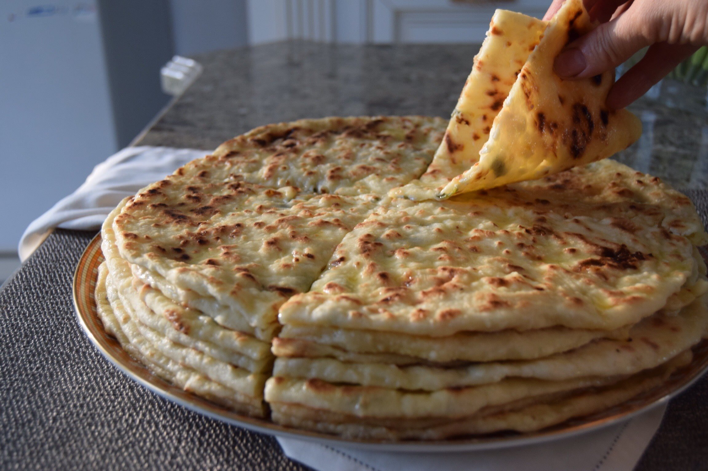

Ч1апилигаш

Чапильгаш — вайнахские лепешки
Ч1апилг с горячим чаем — объедение. А еще люблю, как сочетаются с ч1апильг соленые помидоры! А какие предпочтения у вас?
Ингредиенты
Кефир — 500 мл
Мука пшеничная
Соль — 1 чайная ложка без горки
Сода — 1 чайная ложка без горки
Творог — 400 гр
Зелень петрушки и укропа
Яйцо — 1 шт
Инструкции по приготовлению
- Из кефира, муки и соли с содой замешиваем тесто
- Тем временем готовим начинку
- Раскатываем тоненько, так как в процессе выпекания они становятся раза в два пышнее
Вернуться на верх
Вернуться на главную страницу